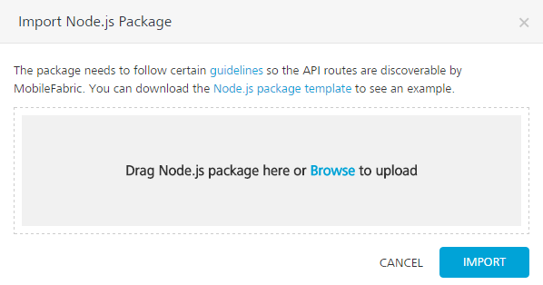
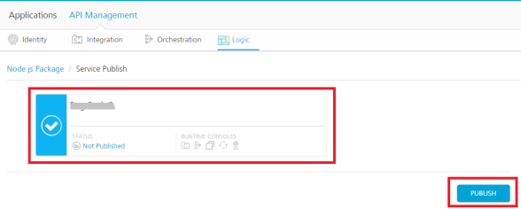

Logic Publish API Management
User Guide: APIs in API Management > Logic in API Management > Node.js Services Integration in Foundry > How to Unpublish a Package from Node.js Runtime Server
How to Publish a Node.js Package into Node.js Runtime Server in API Management
After creating services in Node.js, you must zip (package) the project including services, and then publish the package to Node.js Runtime Server by using Volt MX Foundry Console.
To publish Node.js package, follow these steps:
-
In the API Management page, click the Logic tab.
The Logic page appears and lists services imported from a Node.js package (if any).
-
If you do not have a package.zip, click Node.js package template link to download sample package. The https://github.com/voltmx/VoltMX-Logic-Nodejs-Contact-Sample page appears.
- In the Github page, click the
userpackage.zipfile and click Download. -
In the Volt MX Foundry API Management > Logic, click the IMPORT PACKAGE button. The Import Node.js Package dialog appears.

-
In the Import Node.js Package dialog, drag the
Node.jspackage from your local system and drop it to the dialog. You can also click Browse to select the package through the Microsoft Windows Open dialog. In the Open dialog, locate your exported package (for example, USERAPP.zip file), and select it. Click Open. In the Import Node.js Package dialog, the selected files from the package are added to the dialog.While importing a package, if the existing package in Volt MX Foundry Console has the same name as the importing package, the system throws an error, shown below: The system overwrites the existing package with the data in the .zip file.
Important: While replacing a package, if the package names are same, the new data will override the existing data.
The selected package.zip is loaded into the Import Node.js Package dialog.

-
Click IMPORT. The services from the package are imported to the Logic tab.
After the Node.js package is imported into Volt MX Foundry Console, the following fields are displayed:
Number Field Description 1 NODE.JS PACKAGES Displays the imported package name. 2 RELATIVE PATH FOR SERVICES Displays the relative paths of the imported services. 3 METHOD Displays the method type of the service. 4 SECURITY LEVEL Displays the security level set in the swagger.json file for the service. You can set the security level for required relative path using mfidentitylevel. For example: for the service."mfidentitylevel":"<securitylevel>"The possible values for security levelThe following security levels are supported. protected – indicates that the operation is secured. To use the operation, an app user must be authenticated by an associated identity service. anonymous – indicates that a user must have the app key and app secret to access the operation. public – indicates that the operation requires no special security. To change the security level, follow these steps: Click the Edit button under the SECURITY LEVEL column, and select the type of security level from the drop-down list. Click SAVE. To cancel the changes, click CANCEL. | | 5 | Export Package | Allows you to export a package in a zip file. | | 6 | Delete Package | Allows you to delete a package. > Important: You cannot delete a package if it is associated with any of the apps. You cannot delete a package if it published to Node.js Runtime Server. | | 7 | PACKAGE LAST UPDATED | Displays the date and time of Node.js package when last updated. | | 8 | ASSOCIATED APPS | Displays the View hyperlink. When you click the View link, the system displays the Associated Apps page. The Associated Apps page displays the number of apps associated with a particular service. For more details, refer to Associated Apps. | | 9 | PUBLISHED STATUS | Displays the View hyperlink. When you click the View link, the system displays the Environments dialog. The Environments dialog displays the names of the environments, publish status of the package, and runtime consoles associated with a particular Environment. |
After the Node.js package is imported into Volt MX Foundry Console, you can perform the following actions along with publishing the package.
- To replace the imported Node.js package, click REPLACE PACKAGE . Replacing the package will erase the existing package and will remove the links to the associated application.
- To export the updated Node.js package, click Export Package.
-
To delete the imported Node.js package, click Delete Package. Replacing the package will erase the existing package and will remove the links to the associated application.
Note: If a service is published or part of a published app, you can delete that service only after you unlink the service from all the published app.
-
Click the PUBLISH PACKAGE button to publish the package to Node.js Runtime server.
The Node.js Package > Service Publish section appear with the list of Node.js Runtime servers configured for the Volt MX Foundry account. The list also displays the following Node.js package status for that Node.js Runtime Server environment.
- Published: A Node.js package is published to a Node.js Runtime Server environment. You can unpublish the Node.js package, if required.
- Not Published: A Node.js package is not published to a Node.js Runtime Server environment. You can publish the Node.js package, if required.
-
Failed: A Node.js package is canceled while publishing or unpublishing. You can publish or unpublish the Node.js package, if required.

-
Select the environment.
-
Click the PUBLISH button. The process of uploading the Node.js package to Node.js Runtime server begins.
Note: The PUBLISH button dims when you have not selected any Node.js environment. When an environment is selected, only then the PUBLISH button is available.
After the Node.js package is published to a Node.js Runtime Server, you can link the Node.js services to apps through the Apps > Logic tab. For details, refer to How to Integrate Node.js Services into Volt MX Foundry Apps.
How to Unpublish a Package from Node.js Runtime Server
After a Node.js package is published to Node.js Runtime Server, you can unpublish the package if required.
To unpublish a package from m Node.js Runtime Server, follow these steps:
- In the API Management page, click the Logic tab.
-
Click PUBLISH PACKAGE. The Node.js Package > Service Publish section appears with the list of Node.js Runtime servers configured for the Volt MX Foundry account . The list also displays the following Node.js package status for that Node.js Runtime Server environment.
- Published: A Node.js package is published to a Node.js Runtime Server environment. You can unpublish the Node.js package, if required.
- Not Published: A Node.js package is not published to a Node.js Runtime Server environment. You can publish the Node.js package, if required.
-
Failed: A Node.js package is canceled while publishing or unpublishing. You can publish or unpublish the Node.js package, if required.

-
Under the Node.js Package > Service Publish section, select an environment.
Note: The UNPUBLISH button dims when you have not selected any Node.js environment. When a published environment is selected, only then the UNPUBLISH button is available.
-
Click the UNPUBLISH button. The process of unpublishing the Node.js package from the Node.js Runtime server begins.
Note: If a service is published or part of a published app, you can unpublish that package only after you unlink the service from all the published app.